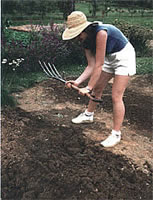

Tilthing The Garden
March/April 1986
The question: How can you break spaded soil into fine particles before you plant? The answer:
Tilthing ... most people aren't even familiar with the word , much less the activity. Alan Chadwick, the founder of biodynamic/French intensive gardening, brought this British skill (and verb) to this country along with his other ingenious gardening methods. And every spring (as well as before all new plantings later in the season), MOTHER's gardeners employ the technique themselves. Over and over, they swing their garden forks at the soil, looking almost like baseball batters who can only hit down . . . or golfers whose swings always stop at the ground.
For that's what tilthing is: swinging a fork into dug-up soil to break up those pesky surface clods. Yet while the basic idea of tilthing is simple, mastering the skill - i.e., learning how to do it so you accomplish the most work without wearing yourself out in the process - takes understanding and practice. We'll try to explain the method as clearly as we can with the words and pictures here. The practice is up to you.
First, you'll need a garden fork. The cheap hardware versions are OK as long as you're gardening in easy-to-work loamy soil. A better tool is a high-quality, thin-tined cultivating fork, such as the ones offered by Smith & Hawken Tool Company (25 Corte Madera, Mill Valley, CA 94941).
Make sure the soil is workable before you start. If it's too wet, you'll create more clods than you disperse. And if it's too dry, trying to tilth it will quickly exhaust you. In the latter case, water the plot thoroughly the day before you start.
When you and your soil are ready, stand in front of the bed to be worked. If you start out right-handed, grab the fork near its head with your right hand and partway down the shaft with the other (don't grab the handle - "choke up" on the shaft). Swing the tool in an arc so it strikes the surface with a sideways , almost glancing, blow. Never bang down - you'll just wear yourself out. And don't hit the ground hard; let the weight of the tool do most of the work.
Tilthing doesn't work the ground deeply - after a series of repeated choplike blows, you'll have pulverized only the surface soil right in front of you. So dig down at that spot to turn up subsurface clods, and tilth them.
You may need to redig and retilth one spot three or four times before you'll have busted all the lumps in the top six to eight inches of ground. To keep from wearing yourself out, switch directions - from tilthing "right-handed" to tilthing "left-handed" - often . . . say, every three or four minutes.
Once you get good at the job, you may be able to completely work a 4' X 30' bed in 45 minutes . . . if you've got fine, loamy soil. In the clay soil of our research gardens, it can take two hours or more to work up the same size area. Of course, how finely you tilth the soil will depend on the crop you're planning to raise: Brassicas actually prefer firm soil, but carrots and other root crops appreciate the finest-particled earth you can give them.
That's about all we can tell you; you'll have to learn the finer points through experimentation and practice. There's no doubt that tilthing is work (head gardener Susan Glaese says, "It's the only chest-building exercise I've seen that doesn't come from the back of a magazine"). But once you've got the knack of doing it correctly, it's quite bearable, even enjoyable, work.
|
 |
 |
|